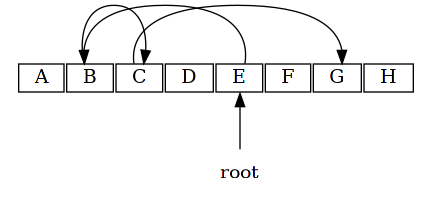
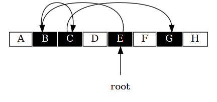
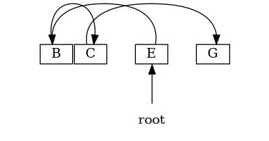
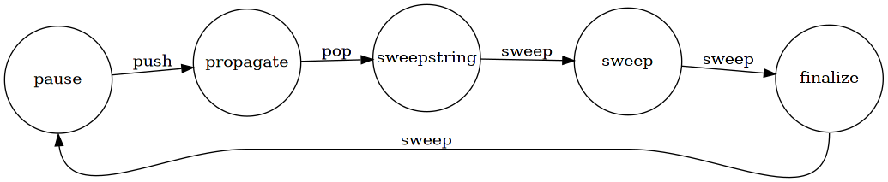

gc
本章来讲解 Lua 内部实现的 gc 机制。
1 algo
gc 算法有很多种，Lua 采用一种增量式三色标记清除算法来实现 gc 机制。
之所以说一种，是因为采用的 gc 算法与其说是一个算法，不如说是一类算法， 大体的思想是相同的，不过在实现细节有些许不同。
1.1 mark & sweep
双色标记清除算法是最经典的算法。
初始阶段，所有对象标记为白色；

标记阶段，将所有从 root 可达的对象标记为黑色；

回收阶段，将所有白色对象回收，同时将所有黑色对象重新标记回白色；

gc 的过程，就在这些阶段中循环进行，所有对象在两种颜色间完成标记和清理。
不过在传统的标记清除算法中，gc 过程是一个整体，主程序在这期间需要暂停。 如果需要处理的对象过多，则主程序需要暂停过长时间。

1.2 tri color incremental mark & sweep
三色标记清除算法是对上述算法的改进。
引入了第三种颜色灰色，使 gc 过程可以增量式的运行， 即 gc 过程可以分成短时间的小段穿插在主程序间执行。
改进后的 gc 过程如下：
初始阶段，所有对象标识为白色；
标记阶段的开始，将所有从 root 可达的对象标记为灰色；
标记阶段，逐个取出灰色对象，将其所有可达的白色对象标记为灰色，最后将自身标记为黑色；
清除阶段，当不存在灰色对象时，开始清除白色对象，将所有黑色对象标记回白色。
改进后的算法，标记阶段可以增量式的运行，随时暂停和继续。
但是在主程序和 gc 交替的过程中，主程序可以随时修改对象间的引用关系， 这就给 gc 带来了困难。
比如以下情况，A 已经标记为黑色，B 标记为灰色，
在 gc 间歇期间，主程序修改了对象间的引用关系， B 不再引用 C，而 A 开始引用 C。
虽然 C 也是可达对象，但是由于断开了 B 到 C 的连接，而 A 已经是黑色， 所以 C 无法被标记为灰色继而黑色，所以本轮 gc 会被回收，最终造成 A 对象的空指针引用， 这显然是不正确的。
所以算法中引用了写屏障（barrier）技术，来解决这种问题。
- 当黑色对象引用白色对象时，将此 白色 对象标记成灰色，称为 barrier forward
- 当黑色对象引用白色对象时，将此 黑色 对象标记回灰色，称为 barrier back
两种方法都可以解决上述问题，在 Lua 内部两种方式都有使用。
读者可以思考一下，为什么只在黑色引用白色时会出现问题。 （排列组合，白->白，白->灰，…，黑->黑）
1.3 double white
Lua 内部更进一步1，引用了双白色，加上灰黑，也就是 4 种颜色。
双白色的目的在于，在一轮 gc 的过程中，主程序会新建新的对象，新建对象用另一种白色来标识。 这样在此轮 gc 最终回收的时候，只回收原有白色的对象即可，不会涉及到新建对象。
同时，最终黑色会被标记为另一种白色。
如果开始下一轮 gc，需要将所有 other white 翻转为 white，回到起始点。
但是这样代价比较高，Lua 直接使用标识 g->currentwhite 来表示当前 gc 处理的白色类型，
这样就只需要翻转 g->currentwhite 即可。
2 bit
下面来看 gc 算法是如何和 Lua 内部的对象关联起来的。
回忆 object 章节，
39: /* 40: ** Common Header for all collectable objects (in macro form, to be 41: ** included in other objects) 42: */ 43: #define CommonHeader GCObject *next; lu_byte tt; lu_byte marked
每一个 GCObject 都有共同的 CommonHeader 字段，其中 marked 就是用来标识对象在 gc 过程中的状态。
41: /* 42: ** Layout for bit use in `marked' field: 43: ** bit 0 - object is white (type 0) 44: ** bit 1 - object is white (type 1) 45: ** bit 2 - object is black 46: ** bit 3 - for userdata: has been finalized 47: ** bit 3 - for tables: has weak keys 48: ** bit 4 - for tables: has weak values 49: ** bit 5 - object is fixed (should not be collected) 50: ** bit 6 - object is "super" fixed (only the main thread) 51: */ 52: 53: 54: #define WHITE0BIT 0 55: #define WHITE1BIT 1 56: #define BLACKBIT 2 57: #define FINALIZEDBIT 3 58: #define KEYWEAKBIT 3 59: #define VALUEWEAKBIT 4 60: #define FIXEDBIT 5 61: #define SFIXEDBIT 6

marked 字节中，前 3 位标识了颜色，任意时刻最多只有 1 位为 1。 当 3 个位都为 0 时，表示灰色。
3 state
Lua 内部的 gc 过程分为如下几个状态，
14: /* 15: ** Possible states of the Garbage Collector 16: */ 17: #define GCSpause 0 18: #define GCSpropagate 1 19: #define GCSsweepstring 2 20: #define GCSsweep 3 21: #define GCSfinalize 4
不同状态间执行不同阶段的 gc 操作，

Lua 内部通过 g->gcstate 来记录当前的状态。
4 phase
gc 模块内部通过 luaC_step 来推动整个 gc 过程，
610: void luaC_step (lua_State *L) { 611: global_State *g = G(L); 612: l_mem lim = (GCSTEPSIZE/100) * g->gcstepmul; 613: if (lim == 0) 614: lim = (MAX_LUMEM-1)/2; /* no limit */ 615: g->gcdept += g->totalbytes - g->GCthreshold; 616: do { 617: lim -= singlestep(L); 618: if (g->gcstate == GCSpause) 619: break; 620: } while (lim > 0); 621: if (g->gcstate != GCSpause) { 622: if (g->gcdept < GCSTEPSIZE) 623: g->GCthreshold = g->totalbytes + GCSTEPSIZE; /* - lim/g->gcstepmul;*/ 624: else { 625: g->gcdept -= GCSTEPSIZE; 626: g->GCthreshold = g->totalbytes; 627: } 628: } 629: else { 630: setthreshold(g); 631: } 632: }
其中调用 singlestep 来进行每个 phase 操作，其中统计处理的对象空间大小的和， 达到阈值就结束此次增量 gc 过程。
556: static l_mem singlestep (lua_State *L) { 557: global_State *g = G(L); 558: /*lua_checkmemory(L);*/ 559: switch (g->gcstate) { 560: case GCSpause: { 561: markroot(L); /* start a new collection */ 562: return 0; 563: } 564: case GCSpropagate: { 565: if (g->gray) 566: return propagatemark(g); 567: else { /* no more `gray' objects */ 568: atomic(L); /* finish mark phase */ 569: return 0; 570: } 571: } 572: case GCSsweepstring: { 573: lu_mem old = g->totalbytes; 574: sweepwholelist(L, &g->strt.hash[g->sweepstrgc++]); 575: if (g->sweepstrgc >= g->strt.size) /* nothing more to sweep? */ 576: g->gcstate = GCSsweep; /* end sweep-string phase */ 577: lua_assert(old >= g->totalbytes); 578: g->estimate -= old - g->totalbytes; 579: return GCSWEEPCOST; 580: } 581: case GCSsweep: { 582: lu_mem old = g->totalbytes; 583: g->sweepgc = sweeplist(L, g->sweepgc, GCSWEEPMAX); 584: if (*g->sweepgc == NULL) { /* nothing more to sweep? */ 585: checkSizes(L); 586: g->gcstate = GCSfinalize; /* end sweep phase */ 587: } 588: lua_assert(old >= g->totalbytes); 589: g->estimate -= old - g->totalbytes; 590: return GCSWEEPMAX*GCSWEEPCOST; 591: } 592: case GCSfinalize: { 593: if (g->tmudata) { 594: GCTM(L); 595: if (g->estimate > GCFINALIZECOST) 596: g->estimate -= GCFINALIZECOST; 597: return GCFINALIZECOST; 598: } 599: else { 600: g->gcstate = GCSpause; /* end collection */ 601: g->gcdept = 0; 602: return 0; 603: } 604: } 605: default: lua_assert(0); return 0; 606: } 607: }
4.1 push
push 阶段从 root 开始，
500: /* mark root set */ 501: static void markroot (lua_State *L) { 502: global_State *g = G(L); 503: g->gray = NULL; 504: g->grayagain = NULL; 505: g->weak = NULL; 506: markobject(g, g->mainthread); 507: /* make global table be traversed before main stack */ 508: markvalue(g, gt(g->mainthread)); 509: markvalue(g, registry(L)); 510: markmt(g); 511: g->gcstate = GCSpropagate; 512: }
从 markroot 可以看出，gc 中的 root 从 mainthread registry globalState 开始。
4.2 pop
pop 阶段的主要入口在 propagatemark，
273: /* 274: ** traverse one gray object, turning it to black. 275: ** Returns `quantity' traversed. 276: */ 277: static l_mem propagatemark (global_State *g) { 278: GCObject *o = g->gray; 279: lua_assert(isgray(o)); 280: gray2black(o); 281: switch (o->gch.tt) { 282: case LUA_TTABLE: { 283: Table *h = gco2h(o); 284: g->gray = h->gclist; 285: if (traversetable(g, h)) /* table is weak? */ 286: black2gray(o); /* keep it gray */ 287: return sizeof(Table) + sizeof(TValue) * h->sizearray + 288: sizeof(Node) * sizenode(h); 289: } 290: case LUA_TFUNCTION: { 291: Closure *cl = gco2cl(o); 292: g->gray = cl->c.gclist; 293: traverseclosure(g, cl); 294: return (cl->c.isC) ? sizeCclosure(cl->c.nupvalues) : 295: sizeLclosure(cl->l.nupvalues); 296: } 297: case LUA_TTHREAD: { 298: lua_State *th = gco2th(o); 299: g->gray = th->gclist; 300: th->gclist = g->grayagain; 301: g->grayagain = o; 302: black2gray(o); 303: traversestack(g, th); 304: return sizeof(lua_State) + sizeof(TValue) * th->stacksize + 305: sizeof(CallInfo) * th->size_ci; 306: } 307: case LUA_TPROTO: { 308: Proto *p = gco2p(o); 309: g->gray = p->gclist; 310: traverseproto(g, p); 311: return sizeof(Proto) + sizeof(Instruction) * p->sizecode + 312: sizeof(Proto *) * p->sizep + 313: sizeof(TValue) * p->sizek + 314: sizeof(int) * p->sizelineinfo + 315: sizeof(LocVar) * p->sizelocvars + 316: sizeof(TString *) * p->sizeupvalues; 317: } 318: default: lua_assert(0); return 0; 319: } 320: }
其中针对不同的对象类型，进行不同的处理。
4.3 sweep
sweep 阶段通过 sweeplist 遍历并回收白色对象，
404: #define sweepwholelist(L,p) sweeplist(L,p,MAX_LUMEM) 405: 406: 407: static GCObject **sweeplist (lua_State *L, GCObject **p, lu_mem count) { 408: GCObject *curr; 409: global_State *g = G(L); 410: int deadmask = otherwhite(g); 411: while ((curr = *p) != NULL && count-- > 0) { 412: if (curr->gch.tt == LUA_TTHREAD) /* sweep open upvalues of each thread */ 413: sweepwholelist(L, &gco2th(curr)->openupval); 414: if ((curr->gch.marked ^ WHITEBITS) & deadmask) { /* not dead? */ 415: lua_assert(!isdead(g, curr) || testbit(curr->gch.marked, FIXEDBIT)); 416: makewhite(g, curr); /* make it white (for next cycle) */ 417: p = &curr->gch.next; 418: } 419: else { /* must erase `curr' */ 420: lua_assert(isdead(g, curr) || deadmask == bitmask(SFIXEDBIT)); 421: *p = curr->gch.next; 422: if (curr == g->rootgc) /* is the first element of the list? */ 423: g->rootgc = curr->gch.next; /* adjust first */ 424: freeobj(L, curr); 425: } 426: } 427: return p; 428: }
最终通过 freeobj 回收相应内存空间，
378: static void freeobj (lua_State *L, GCObject *o) { 379: switch (o->gch.tt) { 380: case LUA_TPROTO: luaF_freeproto(L, gco2p(o)); break; 381: case LUA_TFUNCTION: luaF_freeclosure(L, gco2cl(o)); break; 382: case LUA_TUPVAL: luaF_freeupval(L, gco2uv(o)); break; 383: case LUA_TTABLE: luaH_free(L, gco2h(o)); break; 384: case LUA_TTHREAD: { 385: lua_assert(gco2th(o) != L && gco2th(o) != G(L)->mainthread); 386: luaE_freethread(L, gco2th(o)); 387: break; 388: } 389: case LUA_TSTRING: { 390: G(L)->strt.nuse--; 391: luaM_freemem(L, o, sizestring(gco2ts(o))); 392: break; 393: } 394: case LUA_TUSERDATA: { 395: luaM_freemem(L, o, sizeudata(gco2u(o))); 396: break; 397: } 398: default: lua_assert(0); 399: } 400: }
5 barrier
luaC_barrierf 和 luaC_barrierback 提供了 forward barrier 和 backward barrier 的实现。
661: void luaC_barrierf (lua_State *L, GCObject *o, GCObject *v) { 662: global_State *g = G(L); 663: lua_assert(isblack(o) && iswhite(v) && !isdead(g, v) && !isdead(g, o)); 664: lua_assert(g->gcstate != GCSfinalize && g->gcstate != GCSpause); 665: lua_assert(ttype(&o->gch) != LUA_TTABLE); 666: /* must keep invariant? */ 667: if (g->gcstate == GCSpropagate) 668: reallymarkobject(g, v); /* restore invariant */ 669: else /* don't mind */ 670: makewhite(g, o); /* mark as white just to avoid other barriers */ 671: } 672: 673: 674: void luaC_barrierback (lua_State *L, Table *t) { 675: global_State *g = G(L); 676: GCObject *o = obj2gco(t); 677: lua_assert(isblack(o) && !isdead(g, o)); 678: lua_assert(g->gcstate != GCSfinalize && g->gcstate != GCSpause); 679: black2gray(o); /* make table gray (again) */ 680: t->gclist = g->grayagain; 681: g->grayagain = o; 682: }
在 Lua 内部，只有 table 对象使用 backward barrier，因为其作为容器， 引用其它可变动的对象比较多，置为灰色就不用一直触发写屏障，提高效率。
6 practice
| 章节涉及文件 | 建议阅读程度 |
|---|---|
| lgc.h | ★ ★ ★ ★ ☆ |
| lgc.c | ★ ★ ★ ☆ ☆ |